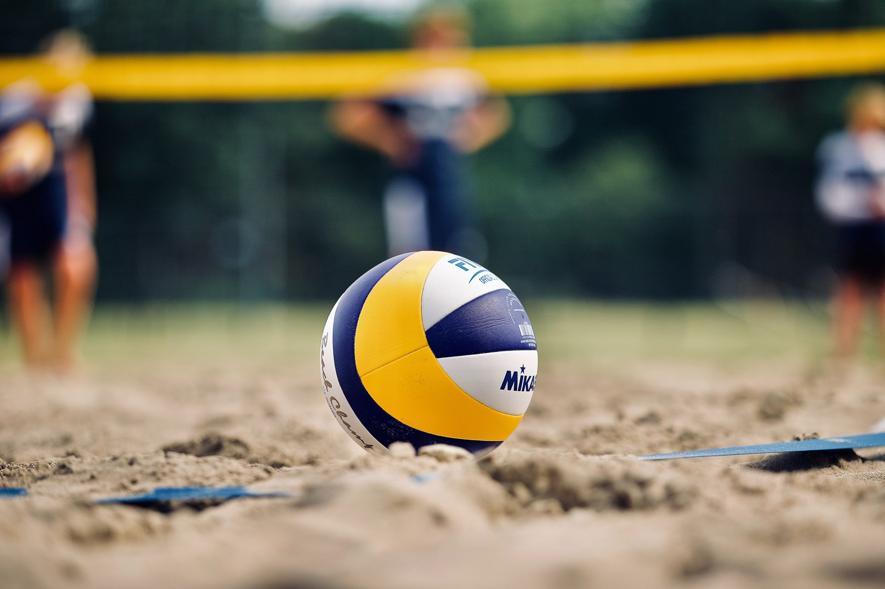
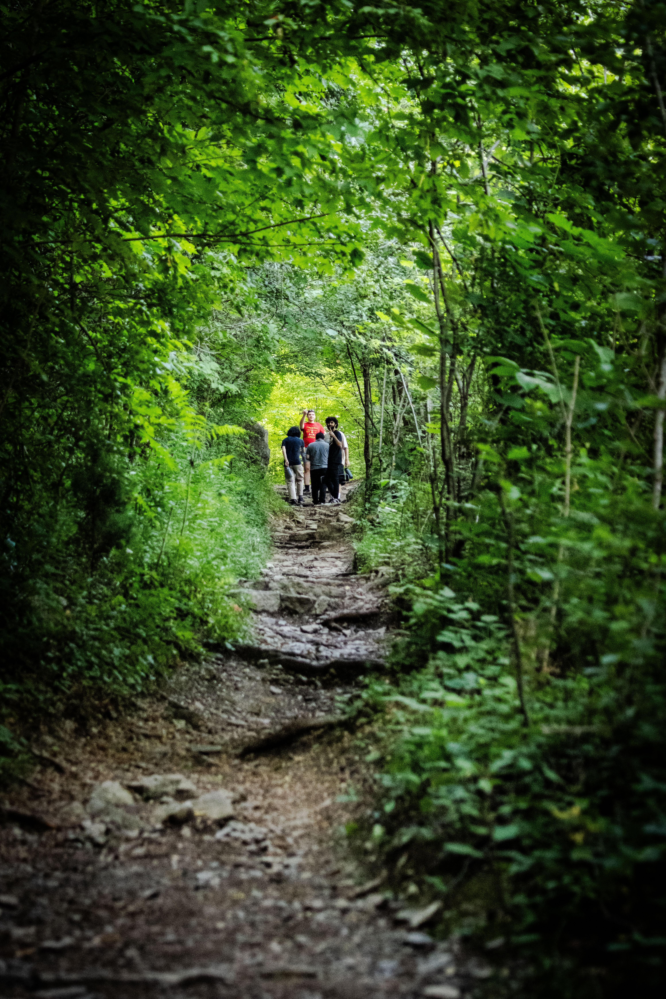

Beyond the lab
What I do
when I'm not studying.
Three things that have genuinely made me a better engineer and a more patient person.

Volleyball
I've played for several years. Volleyball is the sport that taught me how to function under pressure — a bad serve doesn't end the rally, you reset and keep moving. There's a systems-thinking aspect to it I genuinely love: reading formations, anticipating the next move, communicating under stress.
"Your worst day is still someone else's problem to solve — together."

Rock Climbing
Climbing is the most direct analogy to engineering I've found outside a lab. You look at the wall, form a hypothesis, try it, fail, and iterate until it works. Some routes take weeks of attempts — you learn to separate frustration from failure. One is an emotion. The other is data.
"Every route is a puzzle. Physics decides if your solution is correct."

Hiking
The Niagara Escarpment is right there and I try to use it. Hiking resets something that sitting in front of a screen can't fix. It also puts things in scale — you spend months stressing over a project, then you're standing somewhere beautiful and it all gets quieter.
"The trail doesn't care how stressed you are. It just keeps going."